Flu Data Exploration
This particular exploration deals with data collected about flu symptoms, we will examine the data further, pre-process to enable less interference between our data, and tune, fit, and model with a single tree, LASSO, and random forest respectively
#First we need to load all required packages
library(tidyverse) #for streamlining manipulating data## ── Attaching packages ─────────────────────────────────────── tidyverse 1.3.1 ──## ✓ ggplot2 3.3.5 ✓ purrr 0.3.4
## ✓ tibble 3.1.4 ✓ dplyr 1.0.7
## ✓ tidyr 1.1.3 ✓ stringr 1.4.0
## ✓ readr 2.0.1 ✓ forcats 0.5.1## ── Conflicts ────────────────────────────────────────── tidyverse_conflicts() ──
## x dplyr::filter() masks stats::filter()
## x dplyr::lag() masks stats::lag()library(tidymodels) # for streamlining fitting data to models## Registered S3 method overwritten by 'tune':
## method from
## required_pkgs.model_spec parsnip## ── Attaching packages ────────────────────────────────────── tidymodels 0.1.3 ──## ✓ broom 0.7.9 ✓ rsample 0.1.0
## ✓ dials 0.0.10 ✓ tune 0.1.6
## ✓ infer 1.0.0 ✓ workflows 0.2.3
## ✓ modeldata 0.1.1 ✓ workflowsets 0.1.0
## ✓ parsnip 0.1.7 ✓ yardstick 0.0.8
## ✓ recipes 0.1.16## ── Conflicts ───────────────────────────────────────── tidymodels_conflicts() ──
## x scales::discard() masks purrr::discard()
## x dplyr::filter() masks stats::filter()
## x recipes::fixed() masks stringr::fixed()
## x dplyr::lag() masks stats::lag()
## x yardstick::spec() masks readr::spec()
## x recipes::step() masks stats::step()
## • Use tidymodels_prefer() to resolve common conflicts.library(broom) #for cleaning up output from lm()
library(here) #for data loading/saving## here() starts at /Users/WWBD/MADA/BrentCameron-MADA-portfoliolibrary(ggplot2) #for plotting
library(rpart) #for fitting tree model##
## Attaching package: 'rpart'## The following object is masked from 'package:dials':
##
## prunelibrary(glmnet) #for fitting LASSO model## Loading required package: Matrix##
## Attaching package: 'Matrix'## The following objects are masked from 'package:tidyr':
##
## expand, pack, unpack## Loaded glmnet 4.1-3library(ranger) #for fitting random forest model
library(vip)##
## Attaching package: 'vip'## The following object is masked from 'package:utils':
##
## vi#then we need to input the location of the data
data_location <- here::here("Data","processed_data","exploration.rds")
#load data.
mydata <- readRDS(data_location)
#Basic examination of our data
glimpse(mydata)## Rows: 730
## Columns: 32
## $ SwollenLymphNodes <fct> Yes, Yes, Yes, Yes, Yes, No, No, No, Yes, No, Yes, Y…
## $ ChestCongestion <fct> No, Yes, Yes, Yes, No, No, No, Yes, Yes, Yes, Yes, Y…
## $ ChillsSweats <fct> No, No, Yes, Yes, Yes, Yes, Yes, Yes, Yes, No, Yes, …
## $ NasalCongestion <fct> No, Yes, Yes, Yes, No, No, No, Yes, Yes, Yes, Yes, Y…
## $ CoughYN <fct> Yes, Yes, No, Yes, No, Yes, Yes, Yes, Yes, Yes, No, …
## $ Sneeze <fct> No, No, Yes, Yes, No, Yes, No, Yes, No, No, No, No, …
## $ Fatigue <fct> Yes, Yes, Yes, Yes, Yes, Yes, Yes, Yes, Yes, Yes, Ye…
## $ SubjectiveFever <fct> Yes, Yes, Yes, Yes, Yes, Yes, Yes, Yes, Yes, No, Yes…
## $ Headache <fct> Yes, Yes, Yes, Yes, Yes, Yes, No, Yes, Yes, Yes, Yes…
## $ Weakness <fct> Mild, Severe, Severe, Severe, Moderate, Moderate, Mi…
## $ WeaknessYN <fct> Yes, Yes, Yes, Yes, Yes, Yes, Yes, Yes, Yes, Yes, Ye…
## $ CoughIntensity <fct> Severe, Severe, Mild, Moderate, None, Moderate, Seve…
## $ CoughYN2 <fct> Yes, Yes, Yes, Yes, No, Yes, Yes, Yes, Yes, Yes, Yes…
## $ Myalgia <fct> Mild, Severe, Severe, Severe, Mild, Moderate, Mild, …
## $ MyalgiaYN <fct> Yes, Yes, Yes, Yes, Yes, Yes, Yes, Yes, Yes, Yes, Ye…
## $ RunnyNose <fct> No, No, Yes, Yes, No, No, Yes, Yes, Yes, Yes, No, No…
## $ AbPain <fct> No, No, Yes, No, No, No, No, No, No, No, Yes, Yes, N…
## $ ChestPain <fct> No, No, Yes, No, No, Yes, Yes, No, No, No, No, Yes, …
## $ Diarrhea <fct> No, No, No, No, No, Yes, No, No, No, No, No, No, No,…
## $ EyePn <fct> No, No, No, No, Yes, No, No, No, No, No, Yes, No, Ye…
## $ Insomnia <fct> No, No, Yes, Yes, Yes, No, No, Yes, Yes, Yes, Yes, Y…
## $ ItchyEye <fct> No, No, No, No, No, No, No, No, No, No, No, No, Yes,…
## $ Nausea <fct> No, No, Yes, Yes, Yes, Yes, No, No, Yes, Yes, Yes, Y…
## $ EarPn <fct> No, Yes, No, Yes, No, No, No, No, No, No, No, Yes, Y…
## $ Hearing <fct> No, Yes, No, No, No, No, No, No, No, No, No, No, No,…
## $ Pharyngitis <fct> Yes, Yes, Yes, Yes, Yes, Yes, Yes, No, No, No, Yes, …
## $ Breathless <fct> No, No, Yes, No, No, Yes, No, No, No, Yes, No, Yes, …
## $ ToothPn <fct> No, No, Yes, No, No, No, No, No, Yes, No, No, Yes, N…
## $ Vision <fct> No, No, No, No, No, No, No, No, No, No, No, No, No, …
## $ Vomit <fct> No, No, No, No, No, No, Yes, No, No, No, Yes, Yes, N…
## $ Wheeze <fct> No, No, No, Yes, No, Yes, No, No, No, No, No, Yes, N…
## $ BodyTemp <dbl> 98.3, 100.4, 100.8, 98.8, 100.5, 98.4, 102.5, 98.4, …###################################
#Part 1- Pre-Processing
###################################
#We will remove several variables that have yes/no versions while keeping the
#versions of the variables that have multiple levels to reduce potential
#confounding
mydata2 <- mydata %>%
select(!c(WeaknessYN,CoughYN, CoughYN2, MyalgiaYN))
#Mydata2 now shows that the number of variables has been reduced by 4, which
#is what we want, now we will code the 3 symptom severity (ordinal) factors
#as ordered and verify the correct order of none/mild/moderate/severe
mydata3 <- mydata2 %>%
mutate(Weakness = factor(Weakness, levels = c("None", "Mild", "Moderate","Severe"), ordered = TRUE))%>%
mutate(CoughIntensity = factor(CoughIntensity, levels = c("None", "Mild", "Moderate","Severe"), ordered = TRUE)) %>%
mutate(Myalgia = factor(Myalgia, levels = c("None", "Mild", "Moderate","Severe"), ordered = TRUE))
#Now that we have hopefully coded the variables to be ordered we will need to
#verify that they have been changed
is.ordered(mydata3$Weakness)## [1] TRUEis.ordered(mydata3$CoughIntensity)## [1] TRUEis.ordered(mydata3$Myalgia)## [1] TRUE#Now that we have ordered the variables correctly we will examine our other
#features. Two of our variables has less than 50 observations and are thus
#unbalanced, we will need to remove them to aid in accurate data modeling
summary(mydata3)## SwollenLymphNodes ChestCongestion ChillsSweats NasalCongestion Sneeze
## No :418 No :323 No :130 No :167 No :339
## Yes:312 Yes:407 Yes:600 Yes:563 Yes:391
##
##
##
##
## Fatigue SubjectiveFever Headache Weakness CoughIntensity
## No : 64 No :230 No :115 None : 49 None : 47
## Yes:666 Yes:500 Yes:615 Mild :223 Mild :154
## Moderate:338 Moderate:357
## Severe :120 Severe :172
##
##
## Myalgia RunnyNose AbPain ChestPain Diarrhea EyePn Insomnia
## None : 79 No :211 No :639 No :497 No :631 No :617 No :315
## Mild :213 Yes:519 Yes: 91 Yes:233 Yes: 99 Yes:113 Yes:415
## Moderate:325
## Severe :113
##
##
## ItchyEye Nausea EarPn Hearing Pharyngitis Breathless ToothPn
## No :551 No :475 No :568 No :700 No :119 No :436 No :565
## Yes:179 Yes:255 Yes:162 Yes: 30 Yes:611 Yes:294 Yes:165
##
##
##
##
## Vision Vomit Wheeze BodyTemp
## No :711 No :652 No :510 Min. : 97.20
## Yes: 19 Yes: 78 Yes:220 1st Qu.: 98.20
## Median : 98.50
## Mean : 98.94
## 3rd Qu.: 99.30
## Max. :103.10#Hearing and VIsion both have less than 50 recorded observations in their
#respective "yes" category so we will remove those two variables
#Note how we create another data set (mydata4) to allow for easier back and forth
#between data sets if needed
mydata4 <- mydata3 %>%
select(!c(Hearing, Vision))Now let us verify that everything is correct and the variables are removed
glimpse(mydata4)## Rows: 730
## Columns: 26
## $ SwollenLymphNodes <fct> Yes, Yes, Yes, Yes, Yes, No, No, No, Yes, No, Yes, Y…
## $ ChestCongestion <fct> No, Yes, Yes, Yes, No, No, No, Yes, Yes, Yes, Yes, Y…
## $ ChillsSweats <fct> No, No, Yes, Yes, Yes, Yes, Yes, Yes, Yes, No, Yes, …
## $ NasalCongestion <fct> No, Yes, Yes, Yes, No, No, No, Yes, Yes, Yes, Yes, Y…
## $ Sneeze <fct> No, No, Yes, Yes, No, Yes, No, Yes, No, No, No, No, …
## $ Fatigue <fct> Yes, Yes, Yes, Yes, Yes, Yes, Yes, Yes, Yes, Yes, Ye…
## $ SubjectiveFever <fct> Yes, Yes, Yes, Yes, Yes, Yes, Yes, Yes, Yes, No, Yes…
## $ Headache <fct> Yes, Yes, Yes, Yes, Yes, Yes, No, Yes, Yes, Yes, Yes…
## $ Weakness <ord> Mild, Severe, Severe, Severe, Moderate, Moderate, Mi…
## $ CoughIntensity <ord> Severe, Severe, Mild, Moderate, None, Moderate, Seve…
## $ Myalgia <ord> Mild, Severe, Severe, Severe, Mild, Moderate, Mild, …
## $ RunnyNose <fct> No, No, Yes, Yes, No, No, Yes, Yes, Yes, Yes, No, No…
## $ AbPain <fct> No, No, Yes, No, No, No, No, No, No, No, Yes, Yes, N…
## $ ChestPain <fct> No, No, Yes, No, No, Yes, Yes, No, No, No, No, Yes, …
## $ Diarrhea <fct> No, No, No, No, No, Yes, No, No, No, No, No, No, No,…
## $ EyePn <fct> No, No, No, No, Yes, No, No, No, No, No, Yes, No, Ye…
## $ Insomnia <fct> No, No, Yes, Yes, Yes, No, No, Yes, Yes, Yes, Yes, Y…
## $ ItchyEye <fct> No, No, No, No, No, No, No, No, No, No, No, No, Yes,…
## $ Nausea <fct> No, No, Yes, Yes, Yes, Yes, No, No, Yes, Yes, Yes, Y…
## $ EarPn <fct> No, Yes, No, Yes, No, No, No, No, No, No, No, Yes, Y…
## $ Pharyngitis <fct> Yes, Yes, Yes, Yes, Yes, Yes, Yes, No, No, No, Yes, …
## $ Breathless <fct> No, No, Yes, No, No, Yes, No, No, No, Yes, No, Yes, …
## $ ToothPn <fct> No, No, Yes, No, No, No, No, No, Yes, No, No, Yes, N…
## $ Vomit <fct> No, No, No, No, No, No, Yes, No, No, No, Yes, Yes, N…
## $ Wheeze <fct> No, No, No, Yes, No, Yes, No, No, No, No, No, Yes, N…
## $ BodyTemp <dbl> 98.3, 100.4, 100.8, 98.8, 100.5, 98.4, 102.5, 98.4, …Everything looks good, all variables that can affect our models have been removed We will rename the data to a more accessible name
finaldata <- mydata4#Part 2- Analysis ################################
Now that we have pre-processed our data we can begin our analysis, first we will set our seed
set.seed(123)
#We will now split the data by 70% for our training data and 30% for our testing
data_split <- initial_split(finaldata, prop = 7/10,#7/10 stands for 70% training
strata = BodyTemp) # and the rest (30%) for testing)
#Now we will organize our sets of training and test data
train_data <- training(data_split)
test_data <- testing(data_split)
#We will now utilize a 5-fold cross validation, 5 times repeated, we will
#stratify on "BodyTemp" for the CV folds
FoldCV5 <- vfold_cv(train_data, v = 5, repeats = 5, strata = "BodyTemp")
#Now we will create our recipe for our data and fitting
#We will code the categorical variables as dummy variables
recipe_bodytemp <-recipe(BodyTemp ~ ., data = train_data) %>%
step_dummy(all_nominal_predictors())#Null Model Performance ####################################
We need to specify our model before we start computing
lm_model <- linear_reg() %>%
set_engine('lm') %>%
set_mode('regression')We will now compute the performance of a null model for our training and test data (doesn’t use any predictor information)
#Train Data Computing
train_null_recipe <- lm(BodyTemp ~ 1, data = train_data)
#Calculating RMSE
train_null_recipe %>% augment(newdata = train_data) %>%
rmse(truth = BodyTemp, estimate = .fitted)## # A tibble: 1 × 3
## .metric .estimator .estimate
## <chr> <chr> <dbl>
## 1 rmse standard 1.21#Test Data Computing
test_null_recipe <- lm(BodyTemp ~ 1, data = test_data)
#Calculating RMSE
test_null_recipe %>% augment(newdata = test_data) %>%
rmse(truth = BodyTemp, estimate = .fitted)## # A tibble: 1 × 3
## .metric .estimator .estimate
## <chr> <chr> <dbl>
## 1 rmse standard 1.16#Model Tuning and Fitting #################################
We will fit a tree, LASSO model, and a random forest Our steps should be as follows… 1. Model Specification 2. Workflow Definition 3. Tuning Grid Specification 4. Tuning Using Cross- Validation and the tune_grid() function
#Code Used for Tree model can be found from Tidymodels Tutorial #https://www.tidymodels.org/start/tuning/
#TREE ####################################
#Specify Model
tune_spec_TREE <-
decision_tree(
cost_complexity = tune(),
tree_depth = tune(),
) %>%
set_engine("rpart") %>%
set_mode("regression")
tune_spec_TREE## Decision Tree Model Specification (regression)
##
## Main Arguments:
## cost_complexity = tune()
## tree_depth = tune()
##
## Computational engine: rpart#We will now define the workflow for the tree
workflow_TREE <- workflow() %>%
add_model(tune_spec_TREE) %>%
add_recipe(recipe_bodytemp) #The recipe command used here is from
#line 108 where we discuss creating a recipe for data and fitting
#We will now specify the tuning grid
grid_TREE <- grid_regular(cost_complexity(),
tree_depth(),
levels = 5)
grid_TREE
#We will now tune using cross validation and the tune_grid() function
res_TREE<-
workflow_TREE %>%
tune_grid(resamples = FoldCV5 , grid = grid_TREE, metrics = metric_set(rmse))
#Now we will run the autoplot() function to look at some diagnostics
res_TREE %>%
autoplot()
#Now we will selecect the best decision tree model
TOP_TREE <- res_TREE %>%
select_best("rmse")
TOP_TREE
#Now we need to finalize the workflow
workflow_FINAL <- workflow_TREE %>% finalize_workflow(TOP_TREE)
workflow_FINAL
#Now we will utilize the fit() function to fit to the training data
fit_FINAL_TREE <- workflow_FINAL %>% last_fit(data_split)
#Now we will collect the data from our fit
fit_FINAL_TREE %>% collect_metrics()
#We will also collect the predictions
pred_TREE <- fit_FINAL_TREE %>% collect_predictions()
#We will now make two plots, one that shows model predictions from the tuned
#model compared to actual outcomes, and one that plots residuals (RMSE)
pred_tree_plot <- ggplot(data = pred_TREE, aes(x = .pred, y = BodyTemp)) +
geom_point() +
labs(title = "Plot Comparing Model Predictions from Tuned to Actual",
x = "Predictions", y = "Outcomes")
#view the plot
pred_tree_plot
#We need to calculate our residuals before we can plot
#Note that the residuals is the difference between our main predictor and the others
pred_TREE$residuals <- pred_TREE$BodyTemp - pred_TREE$.pred
#Now we will plot our residuals
resid_tree_plot <- ggplot(data= pred_TREE, aes(x=.pred , y=residuals)) + geom_point() +
labs(title="Plot of Residuals",
x="Predictions", y= "Residuals")
#view the plot
resid_tree_plot
#Now we will compare our residual plot to the null model
tree_model_performance <- res_TREE %>% show_best(n=1)
print(tree_model_performance)
NA
NA
NA
NA
NA
NA
NA
NA
NA
NA
NA
NA
NA
NA
NA
NA
NA
NA
NA
NA
NA
NA
NA
NA
NA
NA
NA
NA
NA
NA
NA
NA
NA
NA
NA
NA
NA
NA
NA
NA## # A tibble: 25 × 2
## cost_complexity tree_depth
## <dbl> <int>
## 1 0.0000000001 1
## 2 0.0000000178 1
## 3 0.00000316 1
## 4 0.000562 1
## 5 0.1 1
## 6 0.0000000001 4
## 7 0.0000000178 4
## 8 0.00000316 4
## 9 0.000562 4
## 10 0.1 4
## # … with 15 more rowsNA
NA
NA
NA
NA
NA
NA
NA
NA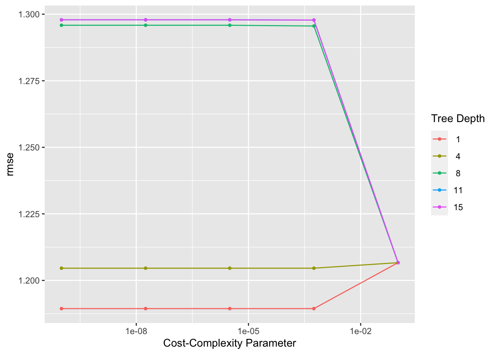
NA
NA
NA
NA
NA
NA## # A tibble: 1 × 3
## cost_complexity tree_depth .config
## <dbl> <int> <chr>
## 1 0.0000000001 1 Preprocessor1_Model01NA
NA
NA
NA## ══ Workflow ════════════════════════════════════════════════════════════════════
## Preprocessor: Recipe
## Model: decision_tree()
##
## ── Preprocessor ────────────────────────────────────────────────────────────────
## 1 Recipe Step
##
## • step_dummy()
##
## ── Model ───────────────────────────────────────────────────────────────────────
## Decision Tree Model Specification (regression)
##
## Main Arguments:
## cost_complexity = 1e-10
## tree_depth = 1
##
## Computational engine: rpartNA
NA
NA
NA
NA
NA## # A tibble: 2 × 4
## .metric .estimator .estimate .config
## <chr> <chr> <dbl> <chr>
## 1 rmse standard 1.19 Preprocessor1_Model1
## 2 rsq standard 0.000889 Preprocessor1_Model1NA
NA
NA
NA
NA
NA
NA
NA
NA
NA
NA
NA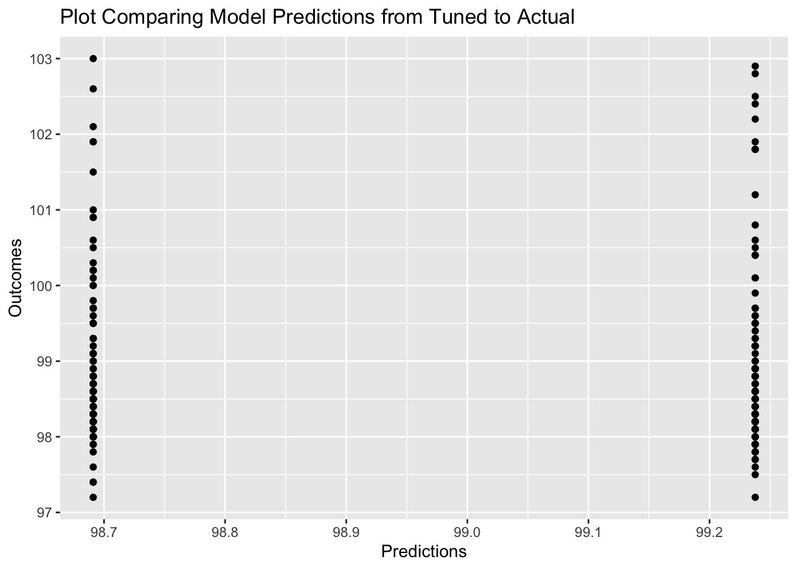
NA
NA
NA
NA
NA
NA
NA
NA
NA
NA
NA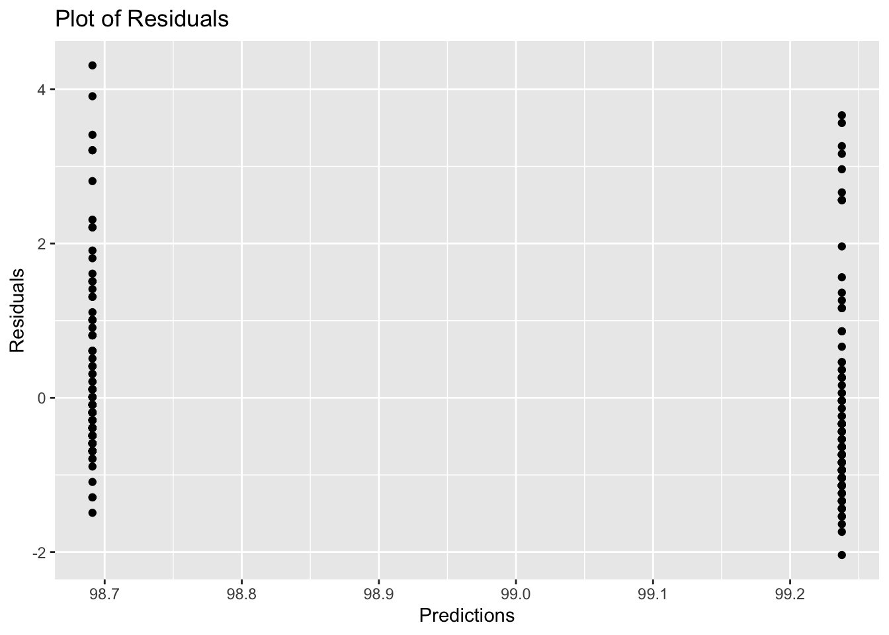
NA
NA
NA
NA## # A tibble: 1 × 8
## cost_complexity tree_depth .metric .estimator mean n std_err .config
## <dbl> <int> <chr> <chr> <dbl> <int> <dbl> <chr>
## 1 0.0000000001 1 rmse standard 1.19 25 0.0181 Preprocesso…The null tree and decision tree model perform very similarly, with a null RMSE of 1.14 and a decision tree RMSE of 1.19, the decision tree model does not perform better than the null
#LASSO ######################################### #Now we will construct a LASSO model #code used from https://www.tidymodels.org/start/case-study/
#We will once again start by constructing our model
lasso_model <- linear_reg() %>%
set_mode("regression") %>%
set_engine("glmnet") %>%
set_args(penalty = tune(), mixture = 1)
#Please note that mixture refers to a number between zero and one that is the
#proportion of L1 regularization (lasso) in the model. In other, words, because
#we are using mixture = 1, we are utilizing a "pure" lasso model here
#We will now create our workflow
lasso_workflow <-workflow() %>%
add_model(lasso_model) %>%
add_recipe(recipe_bodytemp)
#Now we will tune our LASSO model
#As our last model took a long time to run, we will utilize parallel computing
#to make it faster
library(doParallel)## Loading required package: foreach##
## Attaching package: 'foreach'## The following objects are masked from 'package:purrr':
##
## accumulate, when## Loading required package: iterators## Loading required package: parallelncores = 5 #Ncores is used to select the number of cores you want to recruit
#for processing, different computers will naturally have different ideal numbers
cluster <- makePSOCKcluster(5) #make PSOCKcluster stands for creating a sock
#cluster within the 'snow' package, this allowsa for increased computing time
registerDoParallel(5) #registers parallel backend with foreach package
#Now we will create our tuning grid
lasso_reg_grid <- tibble(penalty = 10^seq(-3, 0, length.out = 30))
#Now we tune the model
lasso_tune_res <- lasso_workflow %>%
tune_grid(resamples = FoldCV5,
grid = lasso_reg_grid,
control = control_grid(save_pred = TRUE),
metrics = metric_set(rmse))
#We will now turn off parallel clustering, the reason we turn the clustering off
#after each use is to prevent computations and analysis from being slowed in
#later data analysis, fitting, modeling, etc.
stopCluster(cluster)
#We will now evaluate our LASSO model
lasso_tune_res %>% autoplot()
#Now we will get the tuned model that performs best
best_lasso <- lasso_tune_res %>% select_best(metric = "rmse")
#We now finalize our workflow with the best model
best_lasso_wf <- lasso_workflow %>% finalize_workflow(best_lasso)
#We now fit our best performing model
best_lasso_fit <- best_lasso_wf %>%
fit(data = train_data)
lasso_pred <- predict(best_lasso_fit, train_data)
#Now we will repeat our steps like the past model and plot LASSO variables as
#function of tuning parameter
x <- best_lasso_fit$fit$fit$fit
plot(x, "lambda")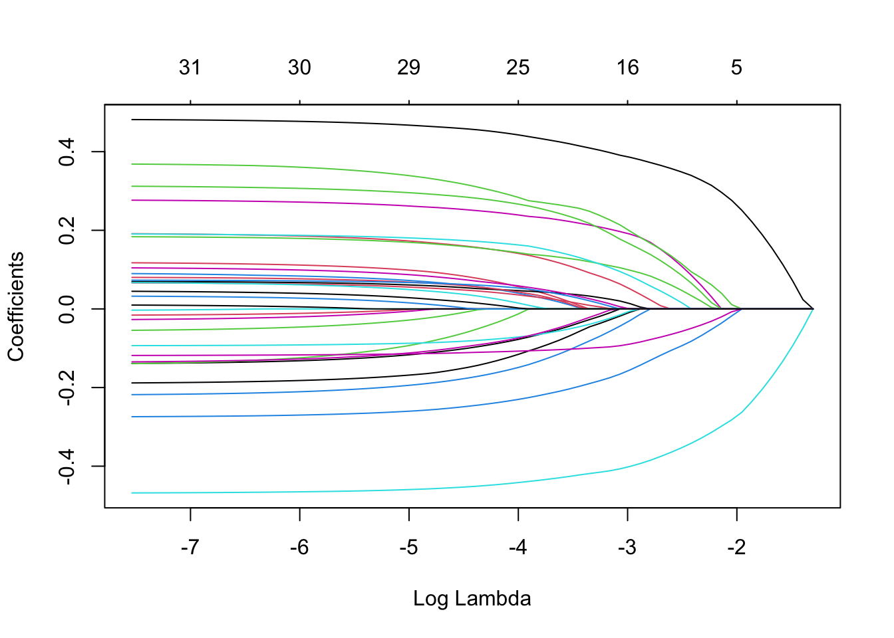
#When a variable is 0 it is no longer being used in the model, thus we are using
#all variables that are only part of the best fit model
tidy(extract_fit_parsnip(best_lasso_fit)) %>% filter(estimate !=0)## # A tibble: 13 × 3
## term estimate penalty
## <chr> <dbl> <dbl>
## 1 (Intercept) 98.7 0.0574
## 2 ChestCongestion_Yes 0.0332 0.0574
## 3 ChillsSweats_Yes 0.0894 0.0574
## 4 NasalCongestion_Yes -0.140 0.0574
## 5 Sneeze_Yes -0.391 0.0574
## 6 Fatigue_Yes 0.178 0.0574
## 7 SubjectiveFever_Yes 0.377 0.0574
## 8 Weakness_1 0.178 0.0574
## 9 Myalgia_2 -0.00994 0.0574
## 10 Myalgia_3 0.0679 0.0574
## 11 RunnyNose_Yes -0.0825 0.0574
## 12 Nausea_Yes 0.00349 0.0574
## 13 Pharyngitis_Yes 0.148 0.0574#Now we plot the observed/predicted and residual plots
#We will try a new way to plot that does not require calculating the
#residuals before hand
#First we will plot with the observe/predicted values
#This code will plot a line with which we hope to see overlap with
#the values, thus signaling that the model is a good fit
#For our x and y limits, the values 97 and 103 were chosen because they allow for
#the clearest illustration of the values in the plane
#The abline is used to add lines to the graph
plot(lasso_pred$.pred,train_data$BodyTemp, xlim = c(97, 103), ylim = c(97, 103))
abline(a = 0, b = 1, col = 'red') #b = 1 creates a 45 degree diagonal line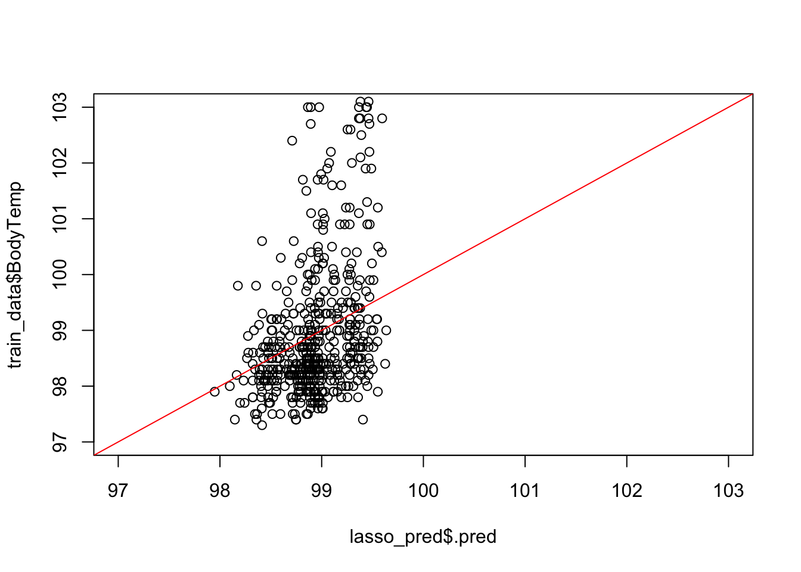
#Now our residual plot, note that because we are subtracting the two values
#used this time instead of putting them together, since residuals are by
#definition the difference between the regular predictors and the chosen predictor
plot(lasso_pred$.pred-train_data$BodyTemp)
abline(a=0, b=0, col = 'blue') #b = 0 creates a straight horizontal line
#Similarly to the tree model, neither the observed/predictors plot or the
#residuals plot indicates that there is significant alignment with the data
#meaning that this model is also not significant.
#Let's look at the performance of the model directly to check this
lasso_performance <- lasso_tune_res %>%
show_best(n = 1)
print(lasso_performance)## # A tibble: 1 × 7
## penalty .metric .estimator mean n std_err .config
## <dbl> <chr> <chr> <dbl> <int> <dbl> <chr>
## 1 0.0574 rmse standard 1.15 25 0.0169 Preprocessor1_Model18The mean RMSE is 1.17, which is still not very impressive, a much lower value would be preferred
#RANDOMFOREST ################################
Both of our past models have not shown significant fit, we will now repeat the steps with a random forest model in the hopes of finding significance
Please note that for Random Forest models, “num.threads” and importance is required or else all models will fail
randomforest_model <- rand_forest() %>%
set_args(mtry = tune(),
trees = tune(),
min_n = tune()
) %>%
#Now we set the engine
set_engine("ranger",
num.threads = 5,
importance = "permutation") %>%
#We select either the continuous or binary classification
set_mode("regression")
#We will set our workflow once again
randomforest_workflow <- workflow() %>%
add_model(randomforest_model) %>%
add_recipe(recipe_bodytemp)
#We will now repeat our steps as the first two models to specify our tuning grid
#We will use parallel computing once again to vastly decrease the time it takes
#to compute the model- since we have already use code previously to create it
#we now only need to use our name designation for our cluster and it will resume
cluster <-makePSOCKcluster(5)
registerDoParallel(5)
#Now we will tune the grid
randomforest_grid <- expand.grid(mtry = c(3, 4, 5, 6), min_n = c(40, 50, 60),
trees = c(500, 1000))
#We will now tune the model while optimizing RMSE
randomforest_tune_res <- randomforest_workflow %>%
tune_grid(resamples = FoldCV5, #This is the name of our previous CV object
grid = randomforest_grid,#This is the grid of values we want to try
metrics = metric_set(rmse))
#Now we turn off our parallel clustering again to prevent slowing processing
stopCluster(cluster)
#Now we plot the performance of our different tuning parameters
randomforest_tune_res %>% autoplot()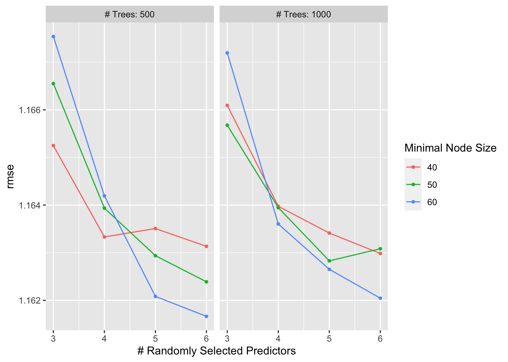
#Now we will obtain the best performing model
best_randomforest <- randomforest_tune_res %>% select_best(metric = "rmse")
#Finalize the workflow with this model
best_randomforest_workflow <- randomforest_workflow %>% finalize_workflow(best_randomforest)
#Now we fit the best performing model
best_randomforest_fit <- best_randomforest_workflow %>% fit(data = train_data)
randomforest_predict <-predict(best_randomforest_fit, train_data)
#although all variables stay in a random forest model, we can examine which are
#the most imoportant using the 'vip' package
x<- best_randomforest_fit$fit$fit$fit
#plot the variables by importance
vip(x, num_features = 26)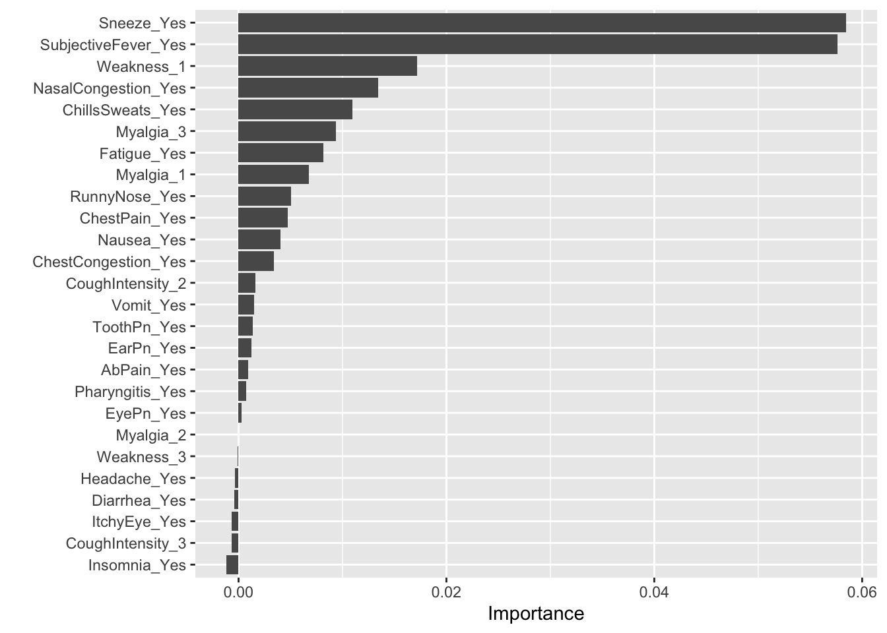
#as can be seen from the plot, subjective fever is the most important variable
#followed by sneezing
#We will now plot the observed/ predicted and residual plots and compare them
#we will repeat the same process used as last time
plot(randomforest_predict$.pred,train_data$BodyTemp,
xlim =c(97, 103), ylim=c(97, 103),
abline(a = 0, b = 1, col = 'red'))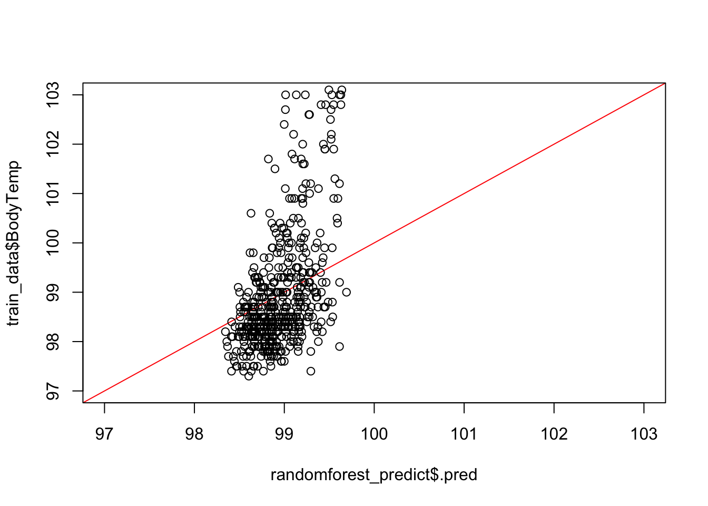
#residual plot
plot(randomforest_predict$.pred-train_data$BodyTemp)
abline(a = 0, b = 0, col = 'blue')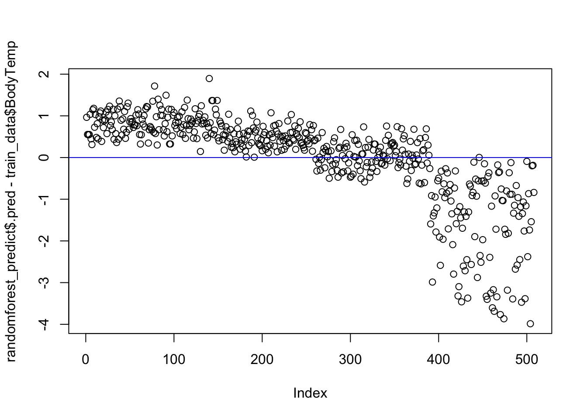
#now that we have finished plotting lets look at our model performance
randomforest_performance <- randomforest_tune_res %>% show_best(n = 1)
print(randomforest_performance)## # A tibble: 1 × 9
## mtry trees min_n .metric .estimator mean n std_err .config
## <dbl> <dbl> <dbl> <chr> <chr> <dbl> <int> <dbl> <chr>
## 1 6 500 60 rmse standard 1.16 25 0.0167 Preprocessor1_Model12The mean RMSE is 1.18, which is still not significant
The LASSO model had the lowest RMSE, which even though is not significant compared to the null model, still puts in in a position to be chosen as the most meaningful
#final model (LASSO) fitting ########################################
#lets restart our parallel processing
cluster<- makePSOCKcluster(5)
registerDoParallel(5)
#Now we will fit on the training set evaluating with the test data
LASSO_fit_final <-best_lasso_wf %>% last_fit(data_split)
#We will now use a trained workflow to predict using our
#test data
final_test_performance<-LASSO_fit_final %>% collect_predictions()
print(final_test_performance)## # A tibble: 222 × 5
## id .pred .row BodyTemp .config
## <chr> <dbl> <int> <dbl> <chr>
## 1 train/test split 99.4 2 100. Preprocessor1_Model1
## 2 train/test split 99.0 4 98.8 Preprocessor1_Model1
## 3 train/test split 99.5 11 98.2 Preprocessor1_Model1
## 4 train/test split 99.5 12 97.9 Preprocessor1_Model1
## 5 train/test split 99.0 14 102. Preprocessor1_Model1
## 6 train/test split 99.2 17 99.3 Preprocessor1_Model1
## 7 train/test split 99.4 25 97.8 Preprocessor1_Model1
## 8 train/test split 99.4 27 99.5 Preprocessor1_Model1
## 9 train/test split 99.4 29 99.7 Preprocessor1_Model1
## 10 train/test split 99.3 32 98.8 Preprocessor1_Model1
## # … with 212 more rowsfinal_test_performance_RMSE <- LASSO_fit_final %>% collect_metrics()
print(final_test_performance_RMSE)## # A tibble: 2 × 4
## .metric .estimator .estimate .config
## <chr> <chr> <dbl> <chr>
## 1 rmse standard 1.15 Preprocessor1_Model1
## 2 rsq standard 0.0291 Preprocessor1_Model1#When comparing the prediction of our final model with the actual data, it
#appears to be rather close, which indicates that we thankfully avoided
#overfitting the data
#unfortunately, when we examine the RMSE of our data we can see that it performs
#exactly the same as with the last data. While this shows the model is consistent
#it still indicates that the model is not an adequate fit for our data
#We will finally plot our final models predicted compared with observed values
#and another plot for residuals
#predicted versus observed
plot(final_test_performance$.pred, test_data$BodyTemp,
xlim = c (97, 103), ylim = c(97, 103))
abline(a = 0, b = 1, col = 'red')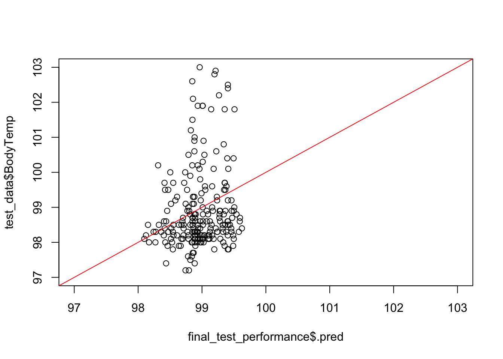
#residual plot
plot(final_test_performance$.pred-test_data$BodyTemp)
abline(a = 0, b = 0, col = 'red')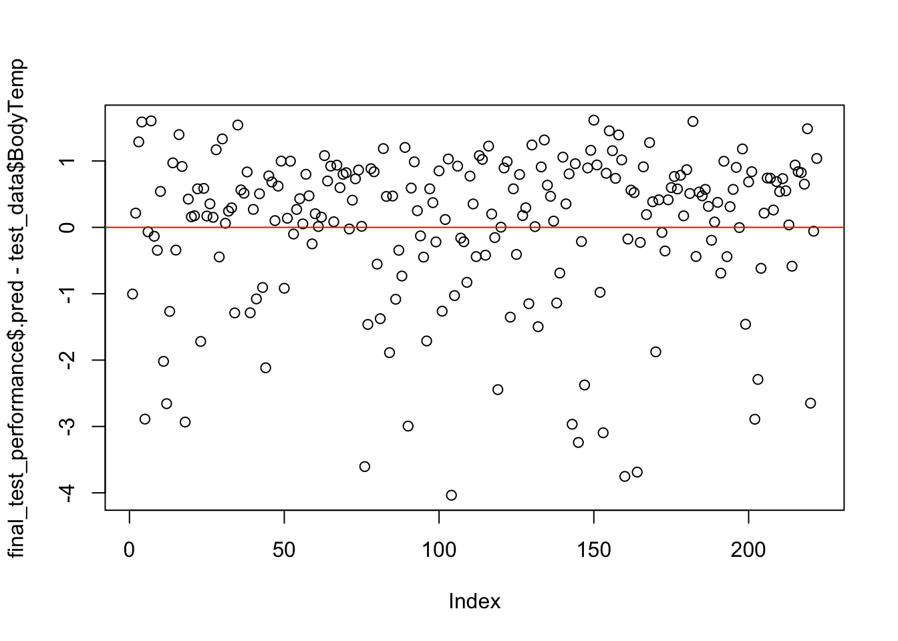